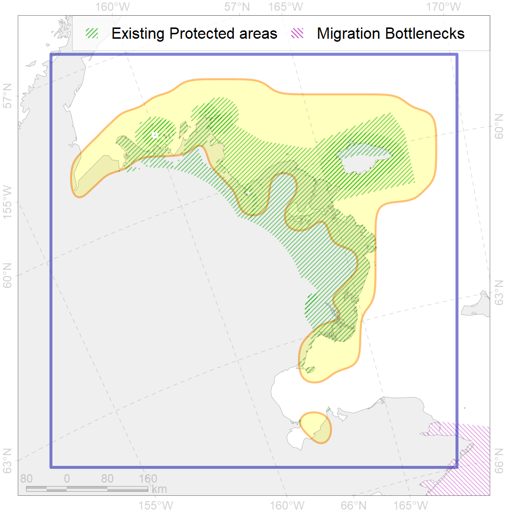
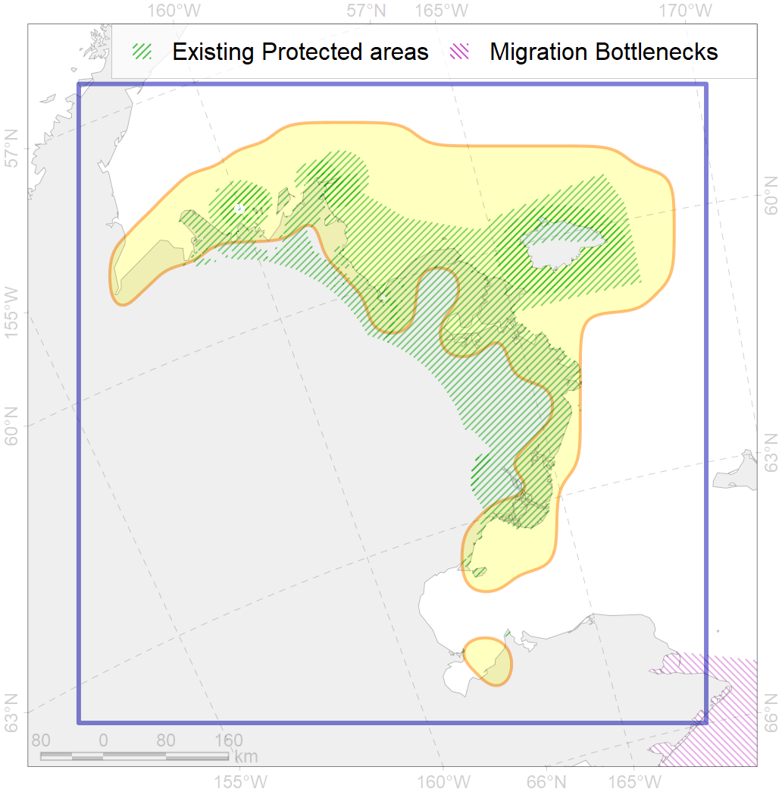

3
For more information regarding this PAC and to conduct custom spatial analysis using the PAC data or any spatial query, please consult Accenter.
 

0
CFs entirely within the PAC area
18
CFs at least 25% within the PAC area
32
CFs with at least 50% of their target achieved in the PAC
40
CFs with at least half of their target achieved in the PAC
| CF ID | CF Name | Proportion in the PAC | Conservation Target | Contribution to ArcNet Target Achievement | PAC’s Contribution to the Achieved Target |
|---|---|---|---|---|---|
| 5010 | Beluga of the Bristol Bay spring-summer distribution | 96.6% | 72.0% | 106.8% | 100.0% |
| 3105 | Polynyas distribution in the South-Eastern Bering region | 94.4% | 12.0% | 785.8% | 99.9% |
| 8018 | Chukchi Sea estuaries | 82.1% | 50.0% | 164.1% | 86.2% |
| 5018 | Beluga of the Eastern Bering Sea summer core distribution | 81.5% | 72.0% | 100.1% | 99.4% |
| 5009 | Beluga of the Bristol Bay autumn-winter distribution | 61.6% | 48.0% | 107.9% | 99.5% |
| 7089 | I.3.1.3. Bristol Bay and Kuskokwin Bay inner shelf | 52.3% | 12.2% | 401.5% | 97.4% |
| 6067 | Common eider (Somateria mollissima v-nigrum) wintering grounds | 39.8% | 67.2% | 56.5% | 46.6% |
| 7233 | Kelp forests of north-eastern coast of Bering Sea | 38.7% | 15.0% | 202.7% | 77.5% |
| 5019 | Beluga of the Eastern Bering Sea winter distribution | 35.6% | 48.0% | 69.8% | 69.6% |
| 7221 | Kelp forests along the Bering Sea coast of southern Alaska and Aleutian Islands | 35.1% | 15.0% | 206.5% | 54.9% |
| 6077 | Common murre (Uria aalge inornata) breeding colonies | 32.3% | 54.0% | 58.7% | 36.6% |
| 7088 | I.3.1.2. Norton Sound inner shelf | 30.7% | 17.4% | 109.8% | 90.7% |
| 3017 | Marginal Ice Zone distribution in April in the Eastern Bering Sea LME | 28.4% | 12.0% | 227.8% | 73.5% |
| 2058 | Bearded seal whelping areas in the Bering Sea as predicted by MIZ distribution | 28.4% | 24.0% | 108.0% | 38.4% |
| 2060 | Ribbon seal whelping areas as predicted by MIZ distribution | 27.6% | 12.0% | 223.1% | 76.4% |
| 2063 | Spotted seal whelping areas as predicted by MIZ distribution | 27.0% | 18.0% | 144.7% | 80.7% |
| 2054 | Spotted seal foraging areas | 26.2% | 12.0% | 200.9% | 39.6% |
| 6017 | Long-tailed duck (Clangula hyemalis) East Asian wintering grounds | 26.0% | 76.8% | 33.3% | 32.3% |
| 6027 | Glaucous gull (Larus hyperboreus barrovianus) breeding grounds | 24.9% | 12.0% | 176.8% | 54.7% |
| 6048 | Black-legged kittiwake (Rissa tridactyla pollicarius) breeding colonies | 24.1% | 64.8% | 35.5% | 25.8% |
| 4005 | Spawning areas of the Pacific Capelin (Mallotus villosus catervarius) in Alaska | 24.1% | 18.0% | 123.0% | 32.3% |
| 4025 | Feeding/migration area of the Coho Salmon (Oncorhynchus kisutch) | 23.2% | 6.0% | 359.6% | 38.5% |
| 4026 | Feeding/migration area of the Chinook Salmon (Oncorhynchus tshawytscha) | 20.1% | 6.0% | 311.9% | 34.0% |
| 3104 | Polynyas distribution in the Notrh-Eastern Bering region | 18.7% | 12.0% | 28.7% | 24.3% |
| 4033 | Feeding area of the Dolly Varden (Salvelinus malma) | 17.5% | 12.0% | 135.5% | 27.9% |
| 1015 | Pacific Walrus Breeding Area | 17.5% | 24.0% | 67.4% | 32.2% |
| 2043 | Ringed seal whelping areas in the Bering Sea | 16.3% | 24.0% | 62.2% | 35.7% |
| 6074 | King eider (Somateria spectabilis) Pacific winetring grounds | 16.2% | 48.0% | 30.0% | 20.7% |
| 4016 | Feeding area of the Broad whitefish (Coregonus nasus), Euro-Asian populations | 15.9% | 32.4% | 44.1% | 31.3% |
| 2055 | Steller Sea Lion habitats of critical importance | 15.8% | 57.6% | 27.3% | 16.4% |
| 4084 | Fish zoogeography, Pacific Region, high-boreal and low-boreal districts of the Eastern North-Pacific subregion | 15.6% | 8.2% | 179.4% | 41.4% |
| 2006 | Bearded seal whelping areas in the Bering Sea | 14.4% | 24.0% | 55.0% | 31.1% |
| 6107 | Horned puffin (Fratercula corniculata) breeding colonies buffer feeding area | 13.8% | 24.0% | 52.6% | 20.5% |
| 1019 | Pacific Walrus Winter Distribution | 12.7% | 24.0% | 47.9% | 25.6% |
| 7247 | seagrasses of the High Arctic | 12.5% | 30.0% | 41.7% | 22.9% |
| 6100 | Black-legged kittiwake (Rissa tridactyla pollicarius) breeding colonies buffer feeding area | 11.4% | 64.8% | 16.1% | 16.1% |
| 6085 | Horned puffin (Fratercula corniculata) breeding colonies | 11.4% | 36.0% | 28.4% | 12.8% |
| 7090 | I.3.1.4. Middle and outer shelf of eastern Bering Sea | 11.3% | 3.7% | 285.7% | 29.1% |
| 6010 | Brent goose (Branta bernicla nigricans) American breeding&moulting grounds | 11.1% | 24.0% | 42.9% | 30.2% |
| 4019 | Feeding area of the Vendace, Least cisco (Coregonus sardinellа), American populations | 11.1% | 24.0% | 42.1% | 21.1% |
| 2034 | Ribbon seal foraging areas in the Bering Sea | 11.0% | 6.0% | 167.9% | 27.2% |
| 6103 | Thick-billed murre (Uria lomvia arrra) breeding colonies buffer feeding area | 10.7% | 48.0% | 20.0% | 15.1% |
| 5054 | Harbour porpoise feeding areas in the Bering Sea | 10.7% | 6.0% | 160.9% | 30.6% |
| 2032 | Northern Fur seal range | 10.7% | 7.2% | 139.1% | 26.6% |
| 4024 | Distribution of the Chum Salmon (Oncorhynchus keta) | 10.4% | 6.0% | 161.7% | 19.2% |
| 6087 | Red-legged kittiwake (Rissa brevirostris) wintering grounds | 10.4% | 20.4% | 48.3% | 22.2% |
| 5058 | Humpback whale summer feeding areas in the Eastern Bering Sea | 9.9% | 12.0% | 65.3% | 59.2% |
| 1017 | Pacific Walrus haulouts | 9.8% | 72.0% | 12.0% | 11.7% |
| 4044 | Range of the Pacific cod (Gadus macrocephalus) | 9.5% | 3.0% | 289.7% | 19.7% |
| 6045 | Stellers eider (Polysticta stelleri) Pacific moulting&migration stopovers | 9.3% | 52.8% | 17.1% | 15.9% |
| 1018 | Pacific Walrus Summer-Autumn Distribution | 9.2% | 24.0% | 35.5% | 15.2% |
| 4011 | Feeding area of the Lake whitefish (Coregonus clupeaformis) | 9.0% | 38.4% | 21.1% | 20.0% |
| 6073 | King eider (Somateria spectabilis) Pacific moulting&migration stopovers | 8.7% | 48.0% | 17.1% | 14.8% |
| 6102 | Common murre (Uria aalge inornata) breeding colonies buffer feeding area | 8.2% | 36.0% | 20.0% | 11.9% |
| 4004 | Range of the Pacific Capelin (Mallotus villosus catervarius) | 8.1% | 3.0% | 246.9% | 18.0% |
| 4013 | Feeding/nursery area of the Bering cisco (Coregonus laurettae), Asian populations | 8.1% | 32.4% | 19.8% | 19.1% |
| 7055 | cold corals of the Pacific | 8.0% | 50.0% | 12.8% | 10.8% |
| 4070 | Local forms of the White-Sea herring (Clupea pallasii) | 7.9% | 24.0% | 30.3% | 17.0% |
| 4050 | Range of the Pollock (Theragra chalcogramma) | 7.9% | 6.0% | 120.1% | 17.6% |
| 4006 | Feeding/nursery area of the Pacific rainbow smelt (Osmerus dentex) | 7.6% | 18.0% | 38.7% | 14.6% |
| 4023 | Feeding/migration area of the Pink Salmon (Oncorhynchus gorbuscha), native distribution | 7.1% | 6.0% | 108.5% | 16.4% |
| 4058 | Range of the Arctic flounder (Liopsetta glacialis) | 7.0% | 6.0% | 107.1% | 13.8% |
| 4042 | Range of the Saffron cod (Eleginus gracilis) | 7.0% | 6.0% | 106.2% | 15.7% |
| 6088 | Least Auklet (Aethia pusilla) breeding colonies buffer feeding area | 6.9% | 24.0% | 26.2% | 8.8% |
| 6078 | Common murre (Uria aalge inornata) wintering grounds | 6.2% | 18.0% | 28.8% | 18.3% |
| 6084 | Thick-billed murre (Uria lomvia) Pacific wintering grounds | 6.2% | 24.0% | 21.6% | 18.3% |
| 4091 | Fish zoogeography, Arctic Region, Subarctic Transitional-Pacific Province | 4.9% | 13.4% | 30.6% | 8.7% |
| 4055 | Range of the Shorthorn Sculpin (Myoxocephalus scorpius), American populations | 3.6% | 3.0% | 112.9% | 6.4% |
| 6039 | Ivory gull (Pagophila eburnea) Pacific wintering grounds | 3.0% | 21.6% | 11.6% | 8.6% |
| 6066 | Common eider (Somateria mollissima v-nigrum) breeding&moulting grounds | 2.6% | 33.6% | 7.3% | 7.1% |